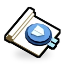

Eye Ball
Eye Ball is an uncommon material. A cyclops eye, still warm. Used for fire staffs and other crafting.
Item sources
| Source | Quantity | Rarity | Notes |
|---|---|---|---|
| Bernie | 1 | 1/3 | |
| Cyclops | 1 | 1/3 | |
| Punchy | 1 | 1/3 | |
| Shooty | 1 | 1/3 | |
| Tier 2 Endless chest | 2–3 | 5% of its rows | Chest |
| Greenshore Fields chests | 1–2 | 20% of its extra row | Endless Dungeon |
| Cyclops Arena chests | 3–6 | 50% of its extra row | Endless Dungeon |
Uses
| Makes | Takes | Level | Notes |
|---|---|---|---|
 Fire Staff Fire Staff | 1 | 1 | |
 Horned Staff Horned Staff | 25 | 35 | |
 Bernie's Hat Bernie's Hat | 1 | 10 | |
 Burning Staff Burning Staff | 1 | 10 | |
 Rich Compost Rich Compost | 1 | 25 | |
| Rich Compost | 1 | 25 | |
 Warden's Seal | 3 | 25 | Sealwright |
 Treasure Seal ×2 Treasure Seal ×2 | 5 | 30 | Sealwright |
 Fields Chart ×2 Fields Chart ×2 | 2 | 25 | Cartographer's Table |
 Cyclops Chart ×2 Cyclops Chart ×2 | 10 | 25 | Cartographer's Table |
| Cyclops Chart ×2 | 10 | 25 | Cartographer's Table |
| Cyclops Chart ×2 | 10 | 25 | Cartographer's Table |
 Cultist's Focus Cultist's Focus | 15 | 40 |
Repair Station
The Repair Station mends these with it:
Notes
Not written yet
When Eye Ball is worth getting, and what to do with it.
Gallery
Not written yet
No pictures yet: renders, models and animations go here.
Trivia
Not written yet
Anything else worth knowing.
Changes
Not written yet
What changed for Eye Ball, update by update.